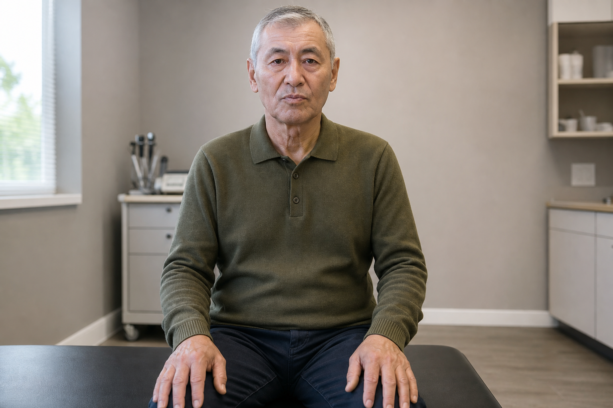

Спросите
Общайтесь с пациентом своими словами и собирайте анамнез.
Симулятор клинического приёма
От первого вопроса до обоснованного решения. Проводите приём виртуального пациента, исследуйте симптомы и разбирайте свои действия.
Один полный демонстрационный приём. Остальное обучение — после регистрации.

Общайтесь с пациентом своими словами и собирайте анамнез.
Проводите осмотр, назначайте исследования и сопоставляйте находки.
Завершите приём и посмотрите, что получилось и что стоит повторить.
12 учебных случаев, два режима обучения и практикум ЭКГ и звуков сердца. Русский, казахский и английский.
Для доступа подтвердите электронную почту.
Пациент входит в кабинет и молчит. Спрашивайте, измеряйте, выслушивайте, назначайте и ставьте диагноз — своими словами и в своём порядке. В конце — разбор с оценкой.
Начать приём → ПреподавателюПолный ключ ответов по каждому случаю: реплики пациента, находки, аускультация, критерии оценки. Приём результатов студентов по кодам и сводка по группе.
Отдельный доступ для преподавателей Открыть раздел →Выберите клиническую ситуацию для следующей тренировки. Полные случаи доступны после входа.
Попробуйте демонстрационный приём и познакомьтесь с форматом обучения.
Попробовать без регистрации